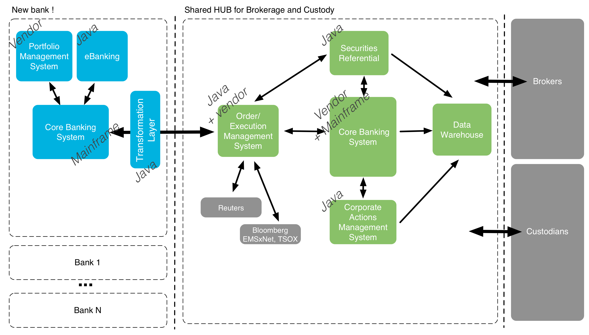
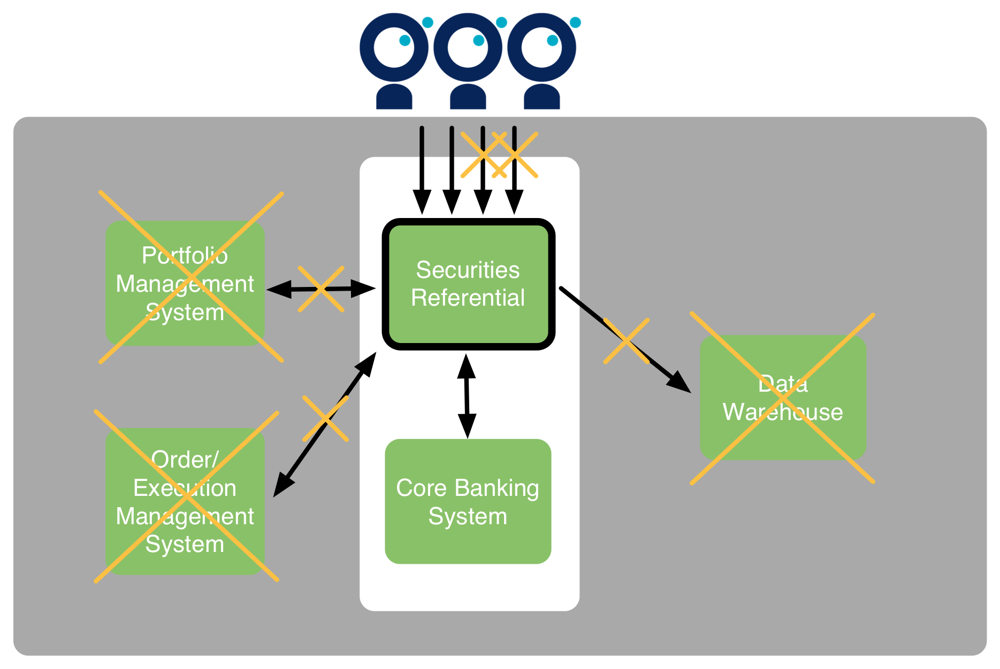

Le projet : migration d'une banque vers une nouvelle plateforme titres

Le projet : migration d'une banque vers une nouvelle plateforme titres
Quelques chiffres
Clients : x10
Portefeuilles titres : x5
Positions : x3
Titres : +50%
Ordres de Bourse : x2
et les effets indirects : opérations sur titres etc.
Il faut "cadrer" le chantier
Avoir une vue précise des volumes existants et cibles
Lister les problèmes existants
Brainstormer sur les problèmes potentiels

Les problèmes peuvent sembler vertigineux
Ne pas se perdre dans les détails, ne pas aborder les solutions
Préférer l'exhaustivité à la précision
Timeboxer !
Comment y parvenir ?
Entretiens utilisateurs
Entretiens IT
Problèmes existants vs problèmes potentiels

Les problèmes "usuels"
- Capacité en terme de nombre de transactions/jour
- Augmentation de volumétrie (x2)
- SLA temps de réponse end-to-end
- Lenteurs actuelles
- Augmentation du nombre d'utilisateurs
- Impact sur la durée des batchs
- Latence et temps de réponse pour les utilisateurs distants
Et ensuite ?
Construire un plan
La carte vous aide à visualiser et à prioriser, elle ne "résout" pas les problèmes
La réponse à chaque problème pourra (devra) être complètement différente !
Chaque problème reste complexe et lié au reste du SI
Diviser pour mieux régner
2 patterns
- Diviser/découpler : passer d'un test de N systèmes à un test de k<N systèmes (idéalement 1)
- Simplifier : réduire la dimensionnalité (cas de tests, données)
Diviser/découpler : un exemple

Diviser/découpler : un exemple
Diviser/découpler : généralisons !

Diviser/découpler : généralisons !

Simplifier : des exemples
Ne pas tester tous les cas fonctionnels
Uniquement simuler les actions principales de l'utilisateur
Faire le test de charge avec des données existantes
Utiliser un jeu de données restreint pour les tests
! Attention, certaines simplifications seront fausses. Il faut penser à documenter les hypothèses faîtes !
Et maintenant ?
Le problème est isolé et simplifié, comment je le résous ?
Ne prévoyez pas un test de charge pour tous les problèmes !
Restez pragmatique !
- Analyse de l'existant
- Modélisation et extrapolation
- Test de l'existant
- Test de la cible
- Test end-to-end intégré de la cible
! Certains problèmes devront passer par plusieurs étapes, afin de limiter le risque !
Ne pas sautez les étapes !
Où pouvez-vous vous "planter" ?
Rappel : vous ne pourrez pas garantir à 100% la performance
Vous pouvez vous planter car :
- un risque est passé à travers le brainstorming
- une simplification était trop "simpliste"
D'expérience, les mauvaises décisions étaient dues à :
- une mauvaise connaissance de la performance existante
- une mauvaise connaissance des usages existants
Les tests end-to-end sont obligatoires car certains résultats (cf. PoC) peuvent défier l'intuition
Disclaimer
Les tests end-to-end sont complexes. Ceci ne se veut pas une méthode systémique mais un inventaire d'outils à disposition, ainsi qu'un REX sur leur efficacité
Outil #1 : Analyse de la production existante
Analyse des latences entre systèmes
Identification du goulet d'étranglement
Découverte des problèmes de design
Évaluation de la capacité du système
Outil #1 : Analyse de la production existante
Exemple de l'évaluation de la capacité du système

Outil #1 : mon REX
Souvent faîte trop tard...
Dur à vendre, pourtant ROI elevé
Commencez petit...
Attention à la répartition de la charge !
Outil #1 : attention aux chiffres !
Outil #1 : attention aux chiffres !
Outil #2 : Benchmark unitaire
Définition : mesure de la réponse à une transaction unitaire
Outil #2 : Benchmark unitaire
Exemple d'analyse

Une représentation en "flame graph" est également adaptée

Outil #2 : mon REX
La plupart des problèmes de design apparaissent en unitaire
Faîtes-en plusieurs...
Attention à ne pas faire de test de charge avant !
S'il ne faut en garder qu'un, gardez celui-ci !
Outil #3 : le Dirac
Outil #3 : le Dirac
Exemple d'analyse

Outil #3 : mon REX
Le complément parfait du test unitaire
Plus simple à analyser qu'une journée de production
Teste également la robustesse du système
Greffez-vous sur les tests fonctionnels !
Outil #4 : "rejeu" d'une journée de production

simplifiée bien sûr !
Outil #4 : mon REX
Difficile à analyser, notamment les écarts
Difficile à interpréter
En dernier, en impliquant le support métier
Outil #1 et #4 : retour aux bases
La décomposition en unitaire et Dirac simplifie grandement l'analyse
Outil #5 : mettre en production
Tout ce qui peut être mis en production par avance doit l'être
Pensez votre stratégie de migration pour monter en charge progressivement
Inspirez vous des Géants du Web (feature flipping, dark launch, canary)
Que faut-il mesurer ?
Temps entrée / sortie de chaque système
NMON (incl. TOP)
à complèter si nécessaire...
Que faut-il analyser ?
Throughput, temps de réponse/charge
Quel outillage ?
Python, Pandas, Sikuli???
Peut-on extrapoler (à la production) ?
Beaucoup d'extrapolations différentes possibles
Environnement, concurrence, simplifications...
Mon expérience : OUI (sauf le sizing machine)
mais attention de rester "linéaire" dans vos tests !
Où pouvez-vous vous "planter" ?
Rappel : vous ne pourrez pas garantir à 100% la performance
- si vous ne faîtes pas assez d'unitaire
- si votre approche n'est pas assez "data-driven"
- si vous n'avez pas assez simplifié / découplé